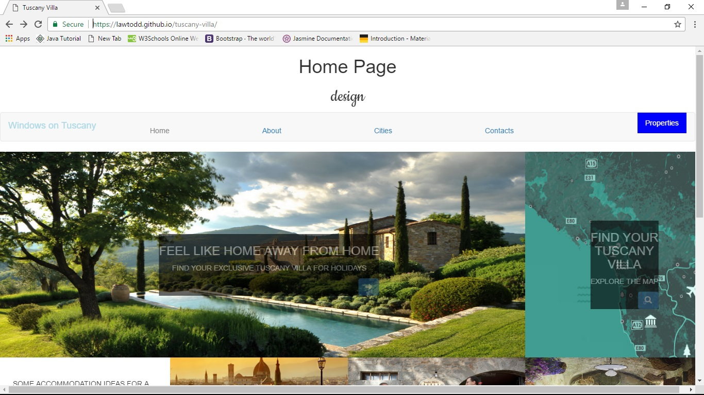
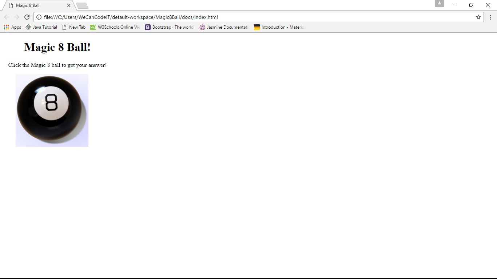
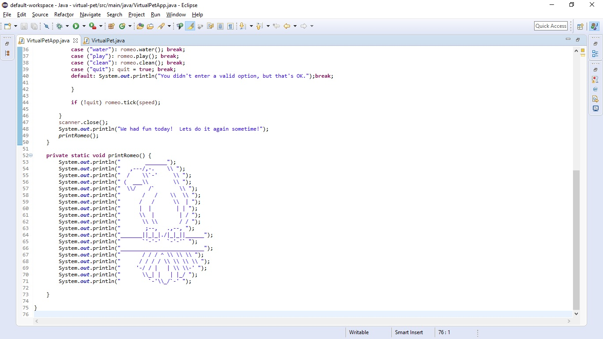

Todd's Blog the place to go to see what Todd has been up to lately!
Backpack Bridge Website
by Todd Law
Posted on May 6, 2017 at 1:27 PM

This was my capstone project for the WeCanCodeit bootcamp. My team worked on it for three weeks. My job was to build in all of the security by setting up Signon Id's that allow separate levels of permission for each of the different subsystems. You can have 'A' for add, 'D' for delete, 'C' for change, or ' ' for no access authority for each subsytem. The subsystems are Id Administration, Foodsite, Student, and Volunteer maintenance. The site was built using Spring MVS and Thymeleaf. You can import this repository into Eclipse and run the BackPackApplication to access it through HTTP://localhost:8080/
Backpack BridgeTodd's Website
by Todd Law
Posted on March 2, 2017 at 11:20 AM

My first web page was for a Tuscany Villa rental business. I made it so it is totally responsive to the screen size that is being used to view the site. It was built using a Bootstrap HTML framework with lots of CSS.
Tuscany VillaTodd's Magic 8 Ball
by Todd Law
Posted on March 2, 2017 at 11:45 PM

This was just a simple page to paractice using Java Script to animate the random shaking of the Magic 8 Ball image after you click on it and generate a random answer. While it is shaking the image, it displays a message that says "The Magic 8 Ball is searching for your answer!" Once it stops shaking, it shows your answer for 3 seconds before it switches back to the original instruction message.
Magic 8 BallTodd's Virtual Pet
by Todd Law
Posted on March 5, 2017 at 11:05 PM

This is a simple java program to create a Virtual Pet bird named Romeo. Everytime you enter a command, there is a little bit of time passing so I have to update the attributes to make him Hungrier, Thirstier, Sleepier, more Bored, and more likely to poop! When you start the program it allows you to enter a number between one and nine to indicate the speed at which time passes. So you can enter a command to feed it, water it, play with it, or clean up after it. It will automatically poop and go to sleep so you can't make it do those things. If any of the attributes gets too high, Romeo will squak, to indicate that you have to do something. When he poops, he says "SQUAK! I made a Boom Boom!" and then the clean up indicator goes up. When he goes to sleep he says "Beddy Bye time!" and you can't feed him or water him or play with him while he is asleep, and he will say "Don't bother me I'm Sleeping!" if you try to!
Virtual Pet